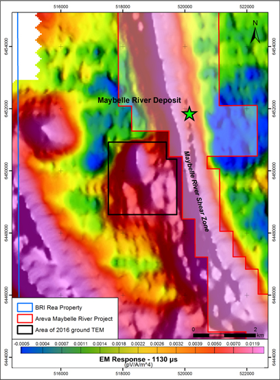
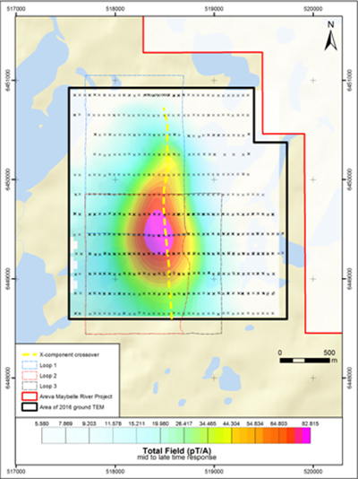

Highlights:
- Preliminary ground Time Domain Electromagnetic ("TDEM") results confirm and further delineate the presence of a high-priority airborne electromagnetic conductor at the Rea Project.
- The conductor is located two kilometres west of AREVA Resources Canada Inc.ꞌs high-grade Maybelle River Uranium Project.
- The ground TDEM conductor is sub-parallel to and likely related to the Maybelle River Shear Zone.
- The Rea Project is one of the largest landholdings in the Western Athabasca Basin, a region that has experienced a surge in exploration activity with the recent discoveries and announcement of large, near surface, high-grade, basement hosted uranium resources by NexGen Energy Ltd. and Fission Uranium Corp.
FOR IMMEDIATE RELEASE
Vancouver, British Columbia – April 5, 2016 – Brazil Resources Inc. ("Brazil Resources", or "the Company") (TSX-V: BRI; OTCQX: BRIZF) is pleased to announce the recent completion and results of a Time Domain Electromagnetic ("TDEM") ground survey on its Rea Uranium Project ("Rea Project"). The Rea Project is owned by Brazil Resources (75%) and AREVA Resources Canada Limited (25%, "AREVA") and is located in the Western Athabasca Basin of Northeastern Alberta.
Garnet Dawson, Chief Executive Officer of Brazil Resources, commented: "The 2016 geophysical program confirmed and refined a high priority target for follow-up drill testing. This target as well as several other high priority anomalies have been identified on the Rea Project and will be the focus of a future drill program. The recent success by Fission and NexGen along the Patterson Lake Corridor points to the potential for large, near surface, basement hosted deposits in this under-explored region of the Western Athabasca Basin".
The ground geophysical survey was designed to provide better resolution of a high-priority target that was originally identified in a previous airborne Versatile Time Domain Electromagnetic survey. The target area was defined as high-priority due to the intensity of the airborne conductor and its proximity to AREVAꞌs Maybelle uranium prospect. The intensity of the original airborne electromagnetic conductor and its location with respect to the Maybelle River Shear Zone ("MRSZ") and AREVAꞌs Maybelle prospect is shown in Figure 1.
Figure 1. 2016 TDEM Survey location.

The TDEM survey was recently completed over 10 days along 19 east-west lines spaced 200 metres apart using three fixed transmitter loops for a total of 35.7 line kilometres of collected data resulting in a total survey area of approximately 4.6 square kilometres. The survey was conducted using a Phoenix TXU-30 transmitter operating with an EMIT controller to generate the primary electromagnetic field. EMIT receivers recording measurements from EMIT fluxgate sensors were used to record the Z, X, and Y components of the secondary electromagnetic field. In order to ensure optimal data quality, each station reading consisted of 128 to 256 stacked measurements, and the resultant readings were assessed for noise and inconsistent decay responses prior to being recorded. Repeat station readings were taken every few hundred meters, or any time data seemed inconsistent.
Data interpretation and modeling are ongoing, but results to date indicate the survey was successful in identifying a single conductor that extends in a northerly trending orientation over a distance of at least 1.8 kilometers. This anomaly has yet to be drill tested (Fig. 2).
Figure 2: 2016 TDEM conductor.

The decay rate of the conductor response identified in the TDEM survey suggests a graphite-related body, which could correspond to a wide zone of highly strained and mylonitized rocks; a potentially favorable scenario for unconformity-hosted uranium deposits.
The nature of the north-striking conductor is similar to the MRSZ, which hosts the Maybelle prospect. While the anomaly is situated only two kilometres west of the Maybelle uranium prospect, it is not necessarily indicative of any potential mineralization on the Rea Project.
Rea Project
The Rea Project consists of 16 contiguous exploration permits covering approximately 125,328 hectares surrounding AREVAꞌs Maybelle River project, which hosts the relatively shallow, high-grade Maybelle uranium prospect. The Rea Project is located approximately 185 kilometres north-northwest of Fort McMurray, Alberta, which is serviced daily by commercial flights from Edmonton and Calgary. Access to the project is by winter roads connecting Fort McKay and Fort Chipewyan, or by charter flights.
Historic exploration programs were completed by Eldorado Nuclear Ltd and Uranerz Exploration and Mining Limited from the mid-1970ꞌs to the late 1990ꞌs on ground now mostly covered by the Rea Project. The programs included various geochemical surveys, boulder prospecting, airborne and ground geophysics and diamond drilling (137 drill holes totaling 28,751 metres). These programs led to the discovery of AREVAꞌs relatively shallow, high-grade Maybelle prospect in 1988. Since that time, AREVA has maintained a narrow zone of permits that cover the north to southwest trending electromagnetic ("EM") conductor that is directly associated with the Maybelle prospect.
In 2005, a large land package surrounding the entire Maybelle River project was acquired by Brazilian Gold Corporation ("BGC") and subsequently optioned to UraMin Inc. in 2006. UraMin Inc. was acquired by AREVA in 2007 and BGC was acquired by Brazil Resources in 2013.
Exploration programs completed during the period from 2005 to 2012 included airborne magnetics, EM, radiometrics and gravity, ground geophysics and diamond drilling (8 drill holes totaling 1,908 metres). The programs were successful in mapping the continuation of the EM conductor that is associated with the MRSZ and the Maybelle prospect. The conductor propagates both northwards and southwards onto the Rea Project permits. In addition, several parallel conductors were located to the east and west of the Maybelle prospect. The focus of the current ground TDEM survey focused on one of these conductors defining an anomaly that is located two kilometres west of the main MRSZ and AREVAꞌs high-grade Maybelle uranium prospect.
Qualified Person
The scientific and technical information in this release has been prepared under the supervision of, Roy Eccles, P.Geol. of APEX Geoscience Ltd., a qualified person as defined by National Instrument 43-101, and contracted by Brazil Resources to supervise, manage and interpret the results of the TDEM survey that was conducted by Koop Geotechnical Services Inc.
About Brazil Resources Inc.
Brazil Resources Inc. is a public mineral exploration company with a focus on the acquisition and development of projects in emerging producing gold districts in Brazil, Paraguay and other regions of the Americas. Brazil Resources is advancing its Cachoeira and São Jorge Gold Projects located in the State of Pará, northeastern Brazil and its Rea Uranium Project in the western Athabasca Basin in northeast Alberta, Canada.
Paulo Pereira, Brazil Resources' President, has reviewed and approved the technical information contained in this news release. Mr. Pereira holds a Bachelor degree in Geology from Universidade do Amazonas in Brazil, is a qualified person as defined in NI 43-101 and is a member of the Association of Professional Geoscientists of Ontario.
For additional information, please contact:
Brazil Resources Inc.
Amir Adnani, Chairman
Garnet Dawson, CEO
Telephone: (855) 630-1001
Cautionary Note
Forward Looking Information
This document contains certain forward-looking information that reflect the current views and/or expectations of Brazil Resources with respect to its business and future events, including the Company's expectations respecting the Rea Project and the Company’s future exploration plans and prospects of such project. Forward-looking statements and information are based on the then-current expectations, beliefs, assumptions, estimates and forecasts about the business and the markets in which Brazil Resources operates. Investors are cautioned that forward-looking statements and information involve risks and uncertainties, including: the inherent risks involved in the exploration and development of mineral properties, the uncertainties involved in interpreting drill results and other exploration data, the potential for delays in exploration or development activities, the geology, grade and continuity of mineral deposits, the possibility that future exploration, development or mining results will not be consistent with Brazil Resources' expectations, accidents, equipment breakdowns, title and permitting matters, labour disputes or other unanticipated difficulties with or interruptions in operations, fluctuating metal prices, the timing of any recovery in resource markets, unanticipated costs and expenses, uncertainties relating to the availability and costs of financing needed in the future, commodity price fluctuations or regulatory restrictions, including environmental regulatory restrictions,. These risks, as well as others, including those set forth in Brazil Resources' filings with Canadian securities regulators, could cause actual results and events to vary significantly. Accordingly, readers should not place undue reliance on forward-looking statements and information. There can be no assurance that forward-looking information, or the material factors or assumptions used to develop such forward looking information, will prove to be accurate. Brazil Resources does not undertake any obligations to release publicly any revisions for updating any voluntary forward-looking statements, except as required by applicable securities law.
Neither the TSX Venture Exchange nor its Regulation Services Provider (as that term is defined in the policies of the TSX Venture Exchange) accepts responsibility for the adequacy or accuracy of this news release.